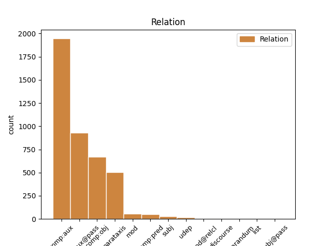
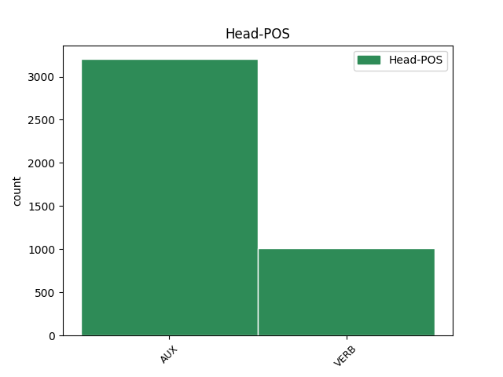
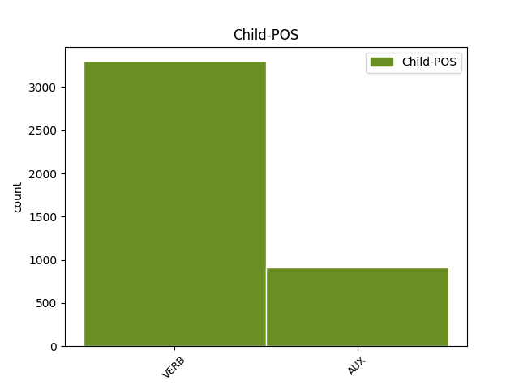

Distribution of features within this leaf



Agreement Rules sorted by frequency.
- When the dependent token is the complement for auxiliary(comp:aux) of the head token, and the dependent token is VERB.
1 I _ _ _ _ 0 _ _ _
2 had have AUX VBD Mood=Ind|Tense=Past|VerbForm=Fin 0 _ _ _
3 wanted want VERB VBN Tense=Past|VerbForm=Part 2 comp:aux _ _
4 to _ _ _ _ 0 _ _ _
5 split _ _ _ _ 0 _ _ _
6 the _ _ _ _ 0 _ _ _
7 total _ _ _ _ 0 _ _ _
8 between _ _ _ _ 0 _ _ _
9 a _ _ _ _ 0 _ _ _
10 credit _ _ _ _ 0 _ _ _
11 card _ _ _ _ 0 _ _ _
12 and _ _ _ _ 0 _ _ _
13 check _ _ _ _ 0 _ _ _
14 card _ _ _ _ 0 _ _ _
15 since _ _ _ _ 0 _ _ _
16 I _ _ _ _ 0 _ _ _
17 was _ _ _ _ 0 _ _ _
18 being _ _ _ _ 0 _ _ _
19 reimbursed _ _ _ _ 0 _ _ _
20 for _ _ _ _ 0 _ _ _
21 the _ _ _ _ 0 _ _ _
22 tire _ _ _ _ 0 _ _ _
23 but _ _ _ _ 0 _ _ _
24 was _ _ _ _ 0 _ _ _
25 told _ _ _ _ 0 _ _ _
26 this _ _ _ _ 0 _ _ _
27 was _ _ _ _ 0 _ _ _
28 n't _ _ _ _ 0 _ _ _
29 possible _ _ _ _ 0 _ _ _
30 . _ _ _ _ 0 _ _ _
1 A _ _ _ _ 0 _ _ _
2 few _ _ _ _ 0 _ _ _
3 minutes _ _ _ _ 0 _ _ _
4 after _ _ _ _ 0 _ _ _
5 I _ _ _ _ 0 _ _ _
6 left _ _ _ _ 0 _ _ _
7 , _ _ _ _ 0 _ _ _
8 I _ _ _ _ 0 _ _ _
9 was be AUX VBD Mood=Ind|Number=Sing|Person=1|Tense=Past|VerbForm=Fin 0 _ _ _
10 called call VERB VBN Tense=Past|VerbForm=Part|Voice=Pass 9 comp:aux@pass _ _
11 and _ _ _ _ 0 _ _ _
12 informed _ _ _ _ 0 _ _ _
13 that _ _ _ _ 0 _ _ _
14 " _ _ _ _ 0 _ _ _
15 I _ _ _ _ 0 _ _ _
16 " _ _ _ _ 0 _ _ _
17 left _ _ _ _ 0 _ _ _
18 my _ _ _ _ 0 _ _ _
19 wheel _ _ _ _ 0 _ _ _
20 lock _ _ _ _ 0 _ _ _
21 ( _ _ _ _ 0 _ _ _
22 which _ _ _ _ 0 _ _ _
23 they _ _ _ _ 0 _ _ _
24 should _ _ _ _ 0 _ _ _
25 have _ _ _ _ 0 _ _ _
26 left _ _ _ _ 0 _ _ _
27 in _ _ _ _ 0 _ _ _
28 the _ _ _ _ 0 _ _ _
29 car _ _ _ _ 0 _ _ _
30 ) _ _ _ _ 0 _ _ _
31 . _ _ _ _ 0 _ _ _
1 He _ _ _ _ 0 _ _ _
2 said say VERB VBD Mood=Ind|Tense=Past|VerbForm=Fin 0 _ _ _
3 it _ _ _ _ 0 _ _ _
4 was be AUX VBD Mood=Ind|Number=Sing|Person=3|Tense=Past|VerbForm=Fin 2 comp:obj _ _
5 the _ _ _ _ 0 _ _ _
6 same _ _ _ _ 0 _ _ _
7 tire _ _ _ _ 0 _ _ _
8 , _ _ _ _ 0 _ _ _
9 and _ _ _ _ 0 _ _ _
10 verified _ _ _ _ 0 _ _ _
11 this _ _ _ _ 0 _ _ _
12 , _ _ _ _ 0 _ _ _
13 after _ _ _ _ 0 _ _ _
14 checking _ _ _ _ 0 _ _ _
15 both _ _ _ _ 0 _ _ _
16 the _ _ _ _ 0 _ _ _
17 actual _ _ _ _ 0 _ _ _
18 tire _ _ _ _ 0 _ _ _
19 on _ _ _ _ 0 _ _ _
20 my _ _ _ _ 0 _ _ _
21 car _ _ _ _ 0 _ _ _
22 and _ _ _ _ 0 _ _ _
23 my _ _ _ _ 0 _ _ _
24 service _ _ _ _ 0 _ _ _
25 papers _ _ _ _ 0 _ _ _
26 from _ _ _ _ 0 _ _ _
27 earlier _ _ _ _ 0 _ _ _
28 in _ _ _ _ 0 _ _ _
29 the _ _ _ _ 0 _ _ _
30 week _ _ _ _ 0 _ _ _
31 . _ _ _ _ 0 _ _ _
1 So _ _ _ _ 0 _ _ _
2 I _ _ _ _ 0 _ _ _
3 pointed _ _ _ _ 0 _ _ _
4 this _ _ _ _ 0 _ _ _
5 out _ _ _ _ 0 _ _ _
6 to _ _ _ _ 0 _ _ _
7 him _ _ _ _ 0 _ _ _
8 , _ _ _ _ 0 _ _ _
9 at _ _ _ _ 0 _ _ _
10 which _ _ _ _ 0 _ _ _
11 point _ _ _ _ 0 _ _ _
12 he _ _ _ _ 0 _ _ _
13 said say VERB VBD Mood=Ind|Tense=Past|VerbForm=Fin 0 _ _ _
14 they _ _ _ _ 0 _ _ _
15 only _ _ _ _ 0 _ _ _
16 had have VERB VBD Mood=Ind|Tense=Past|VerbForm=Fin 13 comp:obj _ _
17 one _ _ _ _ 0 _ _ _
18 of _ _ _ _ 0 _ _ _
19 the _ _ _ _ 0 _ _ _
20 correct _ _ _ _ 0 _ _ _
21 tires _ _ _ _ 0 _ _ _
22 in _ _ _ _ 0 _ _ _
23 stock _ _ _ _ 0 _ _ _
24 . _ _ _ _ 0 _ _ _
1 They _ _ _ _ 0 _ _ _
2 promised promise VERB VBD Mood=Ind|Tense=Past|VerbForm=Fin 0 _ _ _
3 it _ _ _ _ 0 _ _ _
4 'd _ _ _ _ 0 _ _ _
5 be _ _ _ _ 0 _ _ _
6 done _ _ _ _ 0 _ _ _
7 within _ _ _ _ 0 _ _ _
8 an _ _ _ _ 0 _ _ _
9 hour _ _ _ _ 0 _ _ _
10 , _ _ _ _ 0 _ _ _
11 so _ _ _ _ 0 _ _ _
12 I _ _ _ _ 0 _ _ _
13 waited wait VERB VBD Mood=Ind|Tense=Past|VerbForm=Fin 2 parataxis _ _
14 in _ _ _ _ 0 _ _ _
15 the _ _ _ _ 0 _ _ _
16 lobby _ _ _ _ 0 _ _ _
17 . _ _ _ _ 0 _ _ _
1 Dessert _ _ _ _ 0 _ _ _
2 was _ _ _ _ 0 _ _ _
3 ... _ _ _ _ 0 _ _ _
4 hmmm _ _ _ _ 0 _ _ _
5 , _ _ _ _ 0 _ _ _
6 that _ _ _ _ 0 _ _ _
7 's be AUX VBZ Mood=Ind|Number=Sing|Person=3|Tense=Pres|VerbForm=Fin 0 _ _ _
8 interesting _ _ _ _ 0 _ _ _
9 , _ _ _ _ 0 _ _ _
10 I _ _ _ _ 0 _ _ _
11 do do AUX VBP Mood=Ind|Tense=Pres|VerbForm=Fin 7 parataxis _ SpaceAfter=No
12 n't _ _ _ _ 0 _ _ _
13 even _ _ _ _ 0 _ _ _
14 remember _ _ _ _ 0 _ _ _
15 dessert _ _ _ _ 0 _ _ _
16 . _ _ _ _ 0 _ _ _
1 I _ _ _ _ 0 _ _ _
2 was _ _ _ _ 0 _ _ _
3 later _ _ _ _ 0 _ _ _
4 told _ _ _ _ 0 _ _ _
5 they _ _ _ _ 0 _ _ _
6 had have AUX VBD Mood=Ind|Tense=Past|VerbForm=Fin 0 _ _ _
7 been be AUX VBN Tense=Past|VerbForm=Part 6 comp:aux _ _
8 left _ _ _ _ 0 _ _ _
9 at _ _ _ _ 0 _ _ _
10 the _ _ _ _ 0 _ _ _
11 warehouse _ _ _ _ 0 _ _ _
12 and _ _ _ _ 0 _ _ _
13 some _ _ _ _ 0 _ _ _
14 future _ _ _ _ 0 _ _ _
15 date _ _ _ _ 0 _ _ _
16 they _ _ _ _ 0 _ _ _
17 would _ _ _ _ 0 _ _ _
18 be _ _ _ _ 0 _ _ _
19 delivered _ _ _ _ 0 _ _ _
20 . _ _ _ _ 0 _ _ _
1 So _ _ _ _ 0 _ _ _
2 I _ _ _ _ 0 _ _ _
3 got get VERB VBD Mood=Ind|Tense=Past|VerbForm=Fin 0 _ _ _
4 just _ _ _ _ 0 _ _ _
5 my _ _ _ _ 0 _ _ _
6 other _ _ _ _ 0 _ _ _
7 rear _ _ _ _ 0 _ _ _
8 tire _ _ _ _ 0 _ _ _
9 replaced replace VERB VBN Tense=Past|VerbForm=Part 3 comp:pred _ SpaceAfter=No
10 . _ _ _ _ 0 _ _ _
1 Asked ask VERB VBD Mood=Ind|Tense=Past|VerbForm=Fin 6 mod _ _
2 why _ _ _ _ 0 _ _ _
3 , _ _ _ _ 0 _ _ _
4 Rod _ _ _ _ 0 _ _ _
5 simply _ _ _ _ 0 _ _ _
6 told tell VERB VBD Mood=Ind|Tense=Past|VerbForm=Fin 0 _ _ _
7 me _ _ _ _ 0 _ _ _
8 that _ _ _ _ 0 _ _ _
9 he _ _ _ _ 0 _ _ _
10 had _ _ _ _ 0 _ _ _
11 to _ _ _ _ 0 _ _ _
12 research _ _ _ _ 0 _ _ _
13 how _ _ _ _ 0 _ _ _
14 to _ _ _ _ 0 _ _ _
15 do _ _ _ _ 0 _ _ _
16 the _ _ _ _ 0 _ _ _
17 amendment _ _ _ _ 0 _ _ _
18 ( _ _ _ _ 0 _ _ _
19 it _ _ _ _ 0 _ _ _
20 was _ _ _ _ 0 _ _ _
21 an _ _ _ _ 0 _ _ _
22 amended _ _ _ _ 0 _ _ _
23 to _ _ _ _ 0 _ _ _
24 show _ _ _ _ 0 _ _ _
25 that _ _ _ _ 0 _ _ _
26 I _ _ _ _ 0 _ _ _
27 had _ _ _ _ 0 _ _ _
28 purchased _ _ _ _ 0 _ _ _
29 a _ _ _ _ 0 _ _ _
30 home _ _ _ _ 0 _ _ _
31 - _ _ _ _ 0 _ _ _
32 nothing _ _ _ _ 0 _ _ _
33 out _ _ _ _ 0 _ _ _
34 of _ _ _ _ 0 _ _ _
35 the _ _ _ _ 0 _ _ _
36 ordinary _ _ _ _ 0 _ _ _
37 , _ _ _ _ 0 _ _ _
38 one _ _ _ _ 0 _ _ _
39 would _ _ _ _ 0 _ _ _
40 think _ _ _ _ 0 _ _ _
41 ) _ _ _ _ 0 _ _ _
42 and _ _ _ _ 0 _ _ _
43 that _ _ _ _ 0 _ _ _
44 took _ _ _ _ 0 _ _ _
45 time _ _ _ _ 0 _ _ _
46 to _ _ _ _ 0 _ _ _
47 figure _ _ _ _ 0 _ _ _
48 out _ _ _ _ 0 _ _ _
49 . _ _ _ _ 0 _ _ _
1 When _ _ _ _ 0 _ _ _
2 they _ _ _ _ 0 _ _ _
3 sound sound VERB VBP Mood=Ind|Tense=Pres|VerbForm=Fin 7 subj _ _
4 off _ _ _ _ 0 _ _ _
5 , _ _ _ _ 0 _ _ _
6 it _ _ _ _ 0 _ _ _
7 is be AUX VBZ Mood=Ind|Number=Sing|Person=3|Tense=Pres|VerbForm=Fin 0 _ _ _
8 a _ _ _ _ 0 _ _ _
9 true _ _ _ _ 0 _ _ _
10 audio _ _ _ _ 0 _ _ _
11 / _ _ _ _ 0 _ _ _
12 visual _ _ _ _ 0 _ _ _
13 experience _ _ _ _ 0 _ _ _
14 . _ _ _ _ 0 _ _ _
1 Whatever _ _ _ _ 0 _ _ _
2 type _ _ _ _ 0 _ _ _
3 of _ _ _ _ 0 _ _ _
4 operation _ _ _ _ 0 _ _ _
5 they _ _ _ _ 0 _ _ _
6 are be AUX VBP Mood=Ind|Tense=Pres|VerbForm=Fin 10 mod _ _
7 running _ _ _ _ 0 _ _ _
8 , _ _ _ _ 0 _ _ _
9 I _ _ _ _ 0 _ _ _
10 'm be AUX VBP Mood=Ind|Tense=Pres|VerbForm=Fin 0 _ _ _
11 not _ _ _ _ 0 _ _ _
12 interested _ _ _ _ 0 _ _ _
13 and _ _ _ _ 0 _ _ _
14 if _ _ _ _ 0 _ _ _
15 you _ _ _ _ 0 _ _ _
16 're _ _ _ _ 0 _ _ _
17 smart _ _ _ _ 0 _ _ _
18 , _ _ _ _ 0 _ _ _
19 you _ _ _ _ 0 _ _ _
20 wo _ _ _ _ 0 _ _ _
21 n't _ _ _ _ 0 _ _ _
22 be _ _ _ _ 0 _ _ _
23 either _ _ _ _ 0 _ _ _
24 . _ _ _ _ 0 _ _ _
1 Upon _ _ _ _ 0 _ _ _
2 delivery _ _ _ _ 0 _ _ _
3 it _ _ _ _ 0 _ _ _
4 was be AUX VBD Mood=Ind|Number=Sing|Person=3|Tense=Past|VerbForm=Fin 0 _ _ _
5 clear _ _ _ _ 0 _ _ _
6 the _ _ _ _ 0 _ _ _
7 entire _ _ _ _ 0 _ _ _
8 set _ _ _ _ 0 _ _ _
9 was be AUX VBD Mood=Ind|Number=Sing|Person=3|Tense=Past|VerbForm=Fin 4 subj _ _
10 damaged _ _ _ _ 0 _ _ _
11 : _ _ _ _ 0 _ _ _
12 a _ _ _ _ 0 _ _ _
13 piece _ _ _ _ 0 _ _ _
14 of _ _ _ _ 0 _ _ _
15 wood _ _ _ _ 0 _ _ _
16 was _ _ _ _ 0 _ _ _
17 broke _ _ _ _ 0 _ _ _
18 on _ _ _ _ 0 _ _ _
19 the _ _ _ _ 0 _ _ _
20 headboard _ _ _ _ 0 _ _ _
21 ; _ _ _ _ 0 _ _ _
22 the _ _ _ _ 0 _ _ _
23 chest _ _ _ _ 0 _ _ _
24 of _ _ _ _ 0 _ _ _
25 drawers _ _ _ _ 0 _ _ _
26 was _ _ _ _ 0 _ _ _
27 missing _ _ _ _ 0 _ _ _
28 all _ _ _ _ 0 _ _ _
29 four _ _ _ _ 0 _ _ _
30 pieces _ _ _ _ 0 _ _ _
31 necessary _ _ _ _ 0 _ _ _
32 to _ _ _ _ 0 _ _ _
33 attach _ _ _ _ 0 _ _ _
34 the _ _ _ _ 0 _ _ _
35 legs _ _ _ _ 0 _ _ _
36 ; _ _ _ _ 0 _ _ _
37 the _ _ _ _ 0 _ _ _
38 dresser _ _ _ _ 0 _ _ _
39 back _ _ _ _ 0 _ _ _
40 legs _ _ _ _ 0 _ _ _
41 were _ _ _ _ 0 _ _ _
42 pushed _ _ _ _ 0 _ _ _
43 in _ _ _ _ 0 _ _ _
44 causing _ _ _ _ 0 _ _ _
45 the _ _ _ _ 0 _ _ _
46 dresser _ _ _ _ 0 _ _ _
47 to _ _ _ _ 0 _ _ _
48 lean _ _ _ _ 0 _ _ _
49 into _ _ _ _ 0 _ _ _
50 the _ _ _ _ 0 _ _ _
51 wall _ _ _ _ 0 _ _ _
52 ; _ _ _ _ 0 _ _ _
53 and _ _ _ _ 0 _ _ _
54 a _ _ _ _ 0 _ _ _
55 nighstand _ _ _ _ 0 _ _ _
56 was _ _ _ _ 0 _ _ _
57 missing _ _ _ _ 0 _ _ _
58 a _ _ _ _ 0 _ _ _
59 drawer _ _ _ _ 0 _ _ _
60 . _ _ _ _ 0 _ _ _
1 The _ _ _ _ 0 _ _ _
2 other _ _ _ _ 0 _ _ _
3 rolls _ _ _ _ 0 _ _ _
4 were be AUX VBD Mood=Ind|Tense=Past|VerbForm=Fin 0 _ _ _
5 n't _ _ _ _ 0 _ _ _
6 at _ _ _ _ 0 _ _ _
7 all _ _ _ _ 0 _ _ _
8 special _ _ _ _ 0 _ _ _
9 , _ _ _ _ 0 _ _ _
10 especially _ _ _ _ 0 _ _ _
11 given give VERB VBN Tense=Past|VerbForm=Part 4 udep _ _
12 their _ _ _ _ 0 _ _ _
13 pricing _ _ _ _ 0 _ _ _
14 . _ _ _ _ 0 _ _ _
1 I _ _ _ _ 0 _ _ _
2 mean mean VERB VBP Mood=Ind|Tense=Pres|VerbForm=Fin 5 discourse _ SpaceAfter=No
3 , _ _ _ _ 0 _ _ _
4 I _ _ _ _ 0 _ _ _
5 do do AUX VBP Mood=Ind|Tense=Pres|VerbForm=Fin 0 _ _ _
6 n't _ _ _ _ 0 _ _ _
7 care _ _ _ _ 0 _ _ _
8 if _ _ _ _ 0 _ _ _
9 he _ _ _ _ 0 _ _ _
10 does _ _ _ _ 0 _ _ _
11 n't _ _ _ _ 0 _ _ _
12 know _ _ _ _ 0 _ _ _
13 , _ _ _ _ 0 _ _ _
14 but _ _ _ _ 0 _ _ _
15 if _ _ _ _ 0 _ _ _
16 he _ _ _ _ 0 _ _ _
17 pretends _ _ _ _ 0 _ _ _
18 to _ _ _ _ 0 _ _ _
19 know _ _ _ _ 0 _ _ _
20 and _ _ _ _ 0 _ _ _
21 tells _ _ _ _ 0 _ _ _
22 me _ _ _ _ 0 _ _ _
23 BS _ _ _ _ 0 _ _ _
24 to _ _ _ _ 0 _ _ _
25 my _ _ _ _ 0 _ _ _
26 face _ _ _ _ 0 _ _ _
27 , _ _ _ _ 0 _ _ _
28 there _ _ _ _ 0 _ _ _
29 's _ _ _ _ 0 _ _ _
30 no _ _ _ _ 0 _ _ _
31 way _ _ _ _ 0 _ _ _
32 I _ _ _ _ 0 _ _ _
33 'm _ _ _ _ 0 _ _ _
34 going _ _ _ _ 0 _ _ _
35 to _ _ _ _ 0 _ _ _
36 trust _ _ _ _ 0 _ _ _
37 him _ _ _ _ 0 _ _ _
38 when _ _ _ _ 0 _ _ _
39 matters _ _ _ _ 0 _ _ _
40 turn _ _ _ _ 0 _ _ _
41 to _ _ _ _ 0 _ _ _
42 the _ _ _ _ 0 _ _ _
43 price _ _ _ _ 0 _ _ _
44 of _ _ _ _ 0 _ _ _
45 the _ _ _ _ 0 _ _ _
46 car _ _ _ _ 0 _ _ _
47 and _ _ _ _ 0 _ _ _
48 financing _ _ _ _ 0 _ _ _
49 . _ _ _ _ 0 _ _ _
1 Also _ _ _ _ 0 _ _ _
2 , _ _ _ _ 0 _ _ _
3 he _ _ _ _ 0 _ _ _
4 loves love VERB VBZ Mood=Ind|Number=Sing|Person=3|Tense=Pres|VerbForm=Fin 0 _ _ _
5 teaching _ _ _ _ 0 _ _ _
6 so _ _ _ _ 0 _ _ _
7 much _ _ _ _ 0 _ _ _
8 , _ _ _ _ 0 _ _ _
9 his _ _ _ _ 0 _ _ _
10 price _ _ _ _ 0 _ _ _
11 is be AUX VBZ Mood=Ind|Number=Sing|Person=3|Tense=Pres|VerbForm=Fin 4 list _ _
12 unbeatable _ _ _ _ 0 _ _ _
13 , _ _ _ _ 0 _ _ _
14 but _ _ _ _ 0 _ _ _
15 that _ _ _ _ 0 _ _ _
16 does _ _ _ _ 0 _ _ _
17 not _ _ _ _ 0 _ _ _
18 change _ _ _ _ 0 _ _ _
19 his _ _ _ _ 0 _ _ _
20 level _ _ _ _ 0 _ _ _
21 of _ _ _ _ 0 _ _ _
22 skill _ _ _ _ 0 _ _ _
23 . _ _ _ _ 0 _ _ _
1 MSU _ _ _ _ 0 _ _ _
2 does do VERB VBZ Mood=Ind|Number=Sing|Person=3|Tense=Pres|VerbForm=Fin 0 _ _ _
3 a _ _ _ _ 0 _ _ _
4 lot _ _ _ _ 0 _ _ _
5 of _ _ _ _ 0 _ _ _
6 EPM _ _ _ _ 0 _ _ _
7 studies _ _ _ _ 0 _ _ _
8 because _ _ _ _ 0 _ _ _
9 of _ _ _ _ 0 _ _ _
10 how _ _ _ _ 0 _ _ _
11 common _ _ _ _ 0 _ _ _
12 it _ _ _ _ 0 _ _ _
13 is be AUX VBZ Mood=Ind|Number=Sing|Person=3|Tense=Pres|VerbForm=Fin 2 udep _ _
14 here _ _ _ _ 0 _ _ _
15 . _ _ _ _ 0 _ _ _
1 Again _ _ _ _ 0 _ _ _
2 there _ _ _ _ 0 _ _ _
3 is be VERB VBZ Mood=Ind|Number=Sing|Person=3|Tense=Pres|VerbForm=Fin 0 _ _ _
4 no _ _ _ _ 0 _ _ _
5 official _ _ _ _ 0 _ _ _
6 written _ _ _ _ 0 _ _ _
7 statement _ _ _ _ 0 _ _ _
8 from _ _ _ _ 0 _ _ _
9 Sistani _ _ _ _ 0 _ _ _
10 's _ _ _ _ 0 _ _ _
11 office _ _ _ _ 0 _ _ _
12 confirming _ _ _ _ 0 _ _ _
13 this _ _ _ _ 0 _ _ _
14 allegation _ _ _ _ 0 _ _ _
15 , _ _ _ _ 0 _ _ _
16 which _ _ _ _ 0 _ _ _
17 I _ _ _ _ 0 _ _ _
18 think think VERB VBP Mood=Ind|Tense=Pres|VerbForm=Fin 3 mod@relcl _ _
19 is _ _ _ _ 0 _ _ _
20 intentional _ _ _ _ 0 _ _ _
21 . _ _ _ _ 0 _ _ _
1 It _ _ _ _ 0 _ _ _
2 came come VERB VBD Mood=Ind|Tense=Past|VerbForm=Fin 0 _ _ _
3 from _ _ _ _ 0 _ _ _
4 Liverpool _ _ _ _ 0 _ _ _
5 , _ _ _ _ 0 _ _ _
6 that _ _ _ _ 0 _ _ _
7 was be AUX VBD Mood=Ind|Number=Sing|Person=3|Tense=Past|VerbForm=Fin 2 mod@relcl _ _
8 the _ _ _ _ 0 _ _ _
9 port _ _ _ _ 0 _ _ _
10 base _ _ _ _ 0 _ _ _
11 to _ _ _ _ 0 _ _ _
12 the _ _ _ _ 0 _ _ _
13 Titanic _ _ _ _ 0 _ _ _
14 , _ _ _ _ 0 _ _ _
15 destroyed _ _ _ _ 0 _ _ _
16 by _ _ _ _ 0 _ _ _
17 God _ _ _ _ 0 _ _ _
18 because _ _ _ _ 0 _ _ _
19 of _ _ _ _ 0 _ _ _
20 the _ _ _ _ 0 _ _ _
21 arrogant _ _ _ _ 0 _ _ _
22 insult _ _ _ _ 0 _ _ _
23 of _ _ _ _ 0 _ _ _
24 captain _ _ _ _ 0 _ _ _
25 Smith _ _ _ _ 0 _ _ _
26 ( _ _ _ _ 0 _ _ _
27 also _ _ _ _ 0 _ _ _
28 from _ _ _ _ 0 _ _ _
29 Liverpool _ _ _ _ 0 _ _ _
30 ) _ _ _ _ 0 _ _ _
31 : _ _ _ _ 0 _ _ _
32 " _ _ _ _ 0 _ _ _
33 Not _ _ _ _ 0 _ _ _
34 even _ _ _ _ 0 _ _ _
35 God _ _ _ _ 0 _ _ _
36 can _ _ _ _ 0 _ _ _
37 sink _ _ _ _ 0 _ _ _
38 my _ _ _ _ 0 _ _ _
39 ship _ _ _ _ 0 _ _ _
40 " _ _ _ _ 0 _ _ _
41 ( _ _ _ _ 0 _ _ _
42 not _ _ _ _ 0 _ _ _
43 only _ _ _ _ 0 _ _ _
44 the _ _ _ _ 0 _ _ _
45 captain _ _ _ _ 0 _ _ _
46 , _ _ _ _ 0 _ _ _
47 but _ _ _ _ 0 _ _ _
48 also _ _ _ _ 0 _ _ _
49 the _ _ _ _ 0 _ _ _
50 rest _ _ _ _ 0 _ _ _
51 of _ _ _ _ 0 _ _ _
52 the _ _ _ _ 0 _ _ _
53 crew _ _ _ _ 0 _ _ _
54 and _ _ _ _ 0 _ _ _
55 even _ _ _ _ 0 _ _ _
56 the _ _ _ _ 0 _ _ _
57 orchestra _ _ _ _ 0 _ _ _
58 playing _ _ _ _ 0 _ _ _
59 at _ _ _ _ 0 _ _ _
60 the _ _ _ _ 0 _ _ _
61 Titanic _ _ _ _ 0 _ _ _
62 were _ _ _ _ 0 _ _ _
63 from _ _ _ _ 0 _ _ _
64 Liverpool _ _ _ _ 0 _ _ _
65 ) _ _ _ _ 0 _ _ _
66 . _ _ _ _ 0 _ _ _
1 He _ _ _ _ 0 _ _ _
2 tried _ _ _ _ 0 _ _ _
3 to _ _ _ _ 0 _ _ _
4 tell _ _ _ _ 0 _ _ _
5 me _ _ _ _ 0 _ _ _
6 it _ _ _ _ 0 _ _ _
7 was _ _ _ _ 0 _ _ _
8 when _ _ _ _ 0 _ _ _
9 I _ _ _ _ 0 _ _ _
10 told tell VERB VBD Mood=Ind|Tense=Past|VerbForm=Fin 11 reparandum _ _
11 asked ask VERB VBD Mood=Ind|Tense=Past|VerbForm=Fin 0 _ _ _
12 him _ _ _ _ 0 _ _ _
13 if _ _ _ _ 0 _ _ _
14 he _ _ _ _ 0 _ _ _
15 knew _ _ _ _ 0 _ _ _
16 what _ _ _ _ 0 _ _ _
17 fps _ _ _ _ 0 _ _ _
18 stood _ _ _ _ 0 _ _ _
19 for _ _ _ _ 0 _ _ _
20 and _ _ _ _ 0 _ _ _
21 he _ _ _ _ 0 _ _ _
22 had _ _ _ _ 0 _ _ _
23 no _ _ _ _ 0 _ _ _
24 clue _ _ _ _ 0 _ _ _
25 . _ _ _ _ 0 _ _ _
Disagree Examples:
1 You _ _ _ _ 0 _ _ _
2 wonder _ _ _ _ 0 _ _ _
3 if _ _ _ _ 0 _ _ _
4 he _ _ _ _ 0 _ _ _
5 was be AUX VBD Mood=Ind|Number=Sing|Person=3|Tense=Past|VerbForm=Fin 0 _ _ _
6 manipulating manipulate VERB VBG Tense=Pres|VerbForm=Part 5 comp:aux _ _
7 the _ _ _ _ 0 _ _ _
8 market _ _ _ _ 0 _ _ _
9 with _ _ _ _ 0 _ _ _
10 his _ _ _ _ 0 _ _ _
11 bombing _ _ _ _ 0 _ _ _
12 targets _ _ _ _ 0 _ _ _
13 . _ _ _ _ 0 _ _ _
1 The _ _ _ _ 0 _ _ _
2 cells _ _ _ _ 0 _ _ _
3 were be AUX VBD Mood=Ind|Tense=Past|VerbForm=Fin 0 _ _ _
4 operating operate VERB VBG Tense=Pres|VerbForm=Part 3 comp:aux _ _
5 in _ _ _ _ 0 _ _ _
6 the _ _ _ _ 0 _ _ _
7 Ghazaliyah _ _ _ _ 0 _ _ _
8 and _ _ _ _ 0 _ _ _
9 al _ _ _ _ 0 _ _ _
10 - _ _ _ _ 0 _ _ _
11 Jihad _ _ _ _ 0 _ _ _
12 districts _ _ _ _ 0 _ _ _
13 of _ _ _ _ 0 _ _ _
14 the _ _ _ _ 0 _ _ _
15 capital _ _ _ _ 0 _ _ _
16 . _ _ _ _ 0 _ _ _
1 It _ _ _ _ 0 _ _ _
2 reminds _ _ _ _ 0 _ _ _
3 me _ _ _ _ 0 _ _ _
4 too _ _ _ _ 0 _ _ _
5 much _ _ _ _ 0 _ _ _
6 of _ _ _ _ 0 _ _ _
7 the _ _ _ _ 0 _ _ _
8 ARVN _ _ _ _ 0 _ _ _
9 officers _ _ _ _ 0 _ _ _
10 who _ _ _ _ 0 _ _ _
11 were be AUX VBD Mood=Ind|Tense=Past|VerbForm=Fin 0 _ _ _
12 secretly _ _ _ _ 0 _ _ _
13 working work VERB VBG Tense=Pres|VerbForm=Part 11 comp:aux _ _
14 for _ _ _ _ 0 _ _ _
15 the _ _ _ _ 0 _ _ _
16 other _ _ _ _ 0 _ _ _
17 side _ _ _ _ 0 _ _ _
18 in _ _ _ _ 0 _ _ _
19 Vietnam _ _ _ _ 0 _ _ _
20 . _ _ _ _ 0 _ _ _
1 Two _ _ _ _ 0 _ _ _
2 other _ _ _ _ 0 _ _ _
3 Dulaim _ _ _ _ 0 _ _ _
4 leaders _ _ _ _ 0 _ _ _
5 have have AUX VBP Mood=Ind|Tense=Pres|VerbForm=Fin 0 _ _ _
6 been be AUX VBN Tense=Past|VerbForm=Part 5 comp:aux _ _
7 killed _ _ _ _ 0 _ _ _
8 in _ _ _ _ 0 _ _ _
9 the _ _ _ _ 0 _ _ _
10 past _ _ _ _ 0 _ _ _
11 week _ _ _ _ 0 _ _ _
12 and _ _ _ _ 0 _ _ _
13 a _ _ _ _ 0 _ _ _
14 half _ _ _ _ 0 _ _ _
15 . _ _ _ _ 0 _ _ _
1 ( _ _ _ _ 0 _ _ _
2 This _ _ _ _ 0 _ _ _
3 is _ _ _ _ 0 _ _ _
4 a _ _ _ _ 0 _ _ _
5 largely _ _ _ _ 0 _ _ _
6 Sunni _ _ _ _ 0 _ _ _
7 Arab _ _ _ _ 0 _ _ _
8 clan _ _ _ _ 0 _ _ _
9 , _ _ _ _ 0 _ _ _
10 and _ _ _ _ 0 _ _ _
11 some _ _ _ _ 0 _ _ _
12 Sunni _ _ _ _ 0 _ _ _
13 observers _ _ _ _ 0 _ _ _
14 have have AUX VBP Mood=Ind|Tense=Pres|VerbForm=Fin 0 _ _ _
15 accused accuse VERB VBN Tense=Past|VerbForm=Part 14 comp:aux _ _
16 Shiite _ _ _ _ 0 _ _ _
17 elements _ _ _ _ 0 _ _ _
18 in _ _ _ _ 0 _ _ _
19 the _ _ _ _ 0 _ _ _
20 government _ _ _ _ 0 _ _ _
21 of _ _ _ _ 0 _ _ _
22 being _ _ _ _ 0 _ _ _
23 behind _ _ _ _ 0 _ _ _
24 the _ _ _ _ 0 _ _ _
25 assassination _ _ _ _ 0 _ _ _
26 ; _ _ _ _ 0 _ _ _
27 it _ _ _ _ 0 _ _ _
28 is _ _ _ _ 0 _ _ _
29 more _ _ _ _ 0 _ _ _
30 likely _ _ _ _ 0 _ _ _
31 the _ _ _ _ 0 _ _ _
32 work _ _ _ _ 0 _ _ _
33 of _ _ _ _ 0 _ _ _
34 Sunni _ _ _ _ 0 _ _ _
35 Arab _ _ _ _ 0 _ _ _
36 guerrillas _ _ _ _ 0 _ _ _
37 punishing _ _ _ _ 0 _ _ _
38 the _ _ _ _ 0 _ _ _
39 Batawi _ _ _ _ 0 _ _ _
40 leaders _ _ _ _ 0 _ _ _
41 for _ _ _ _ 0 _ _ _
42 cooperating _ _ _ _ 0 _ _ _
43 with _ _ _ _ 0 _ _ _
44 the _ _ _ _ 0 _ _ _
45 Dec. _ _ _ _ 0 _ _ _
46 15 _ _ _ _ 0 _ _ _
47 elections _ _ _ _ 0 _ _ _
48 . _ _ _ _ 0 _ _ _
49 ) _ _ _ _ 0 _ _ _